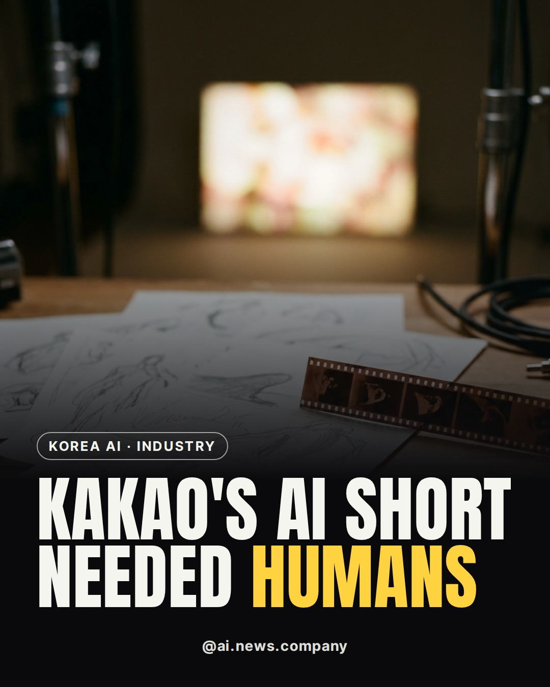

AI News Daily
Global AI news, with a closer look at Asia and Europe. Two stories a day.
Get the weekly digest by email Instagram ThreadsLatest stories
Tools we use
Links marked Ad are affiliate links: we may earn a commission if you sign up. They never decide what news we cover.
Facts come from the original articles linked above. Images are AI-generated illustrations.